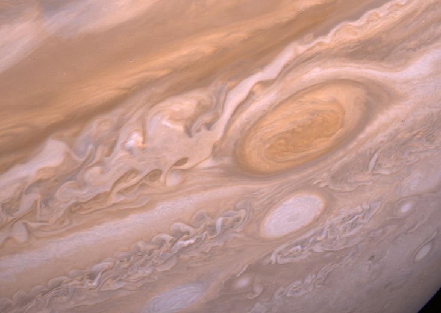
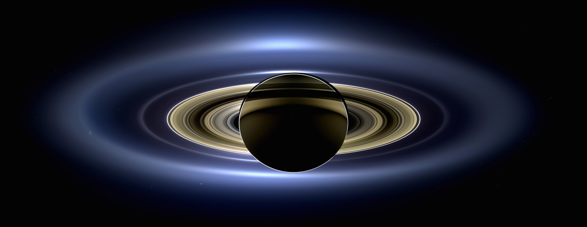

Croisière interplanétaire (Partie II)
CEA Explorer et comprendre l'Univers
12 novembre 2014
Les planètes joviennes

NASA
Jupiter

Cassini (2011) | NASA/JPL/University of Arizona
Jupiter
| Distance au Soleil |
5,203 UA |
| Excentricité |
0,048 |
| Période de révolution |
11,86 années |
| Période de rotation |
9h 50min 30s |
| Diamètre |
142 800 km |
| Masse |
1,90\(\times\) 1027 kg |
| Champ gravitationnel |
24,8 N/kg |
| Densité |
1,31 |
| Albédo |
0,52 |
| Température |
-110°C |
Jupiter
- 70% de toute la masse des planètes
- 1400 fois plus volumineuse que la Terre
- 318 fois plus massive que la Terre
- À peine plus dense que l'eau
- Champ magnétique 17 000 fois plus grand que celui de la Terre
- Aplatissement de 6%
Jupiter
- Composition de la planète
- Hydrogène (78%)
- Hélium (20%)
- Ammoniac
- Hydrosulfide d'ammonium
- Eau
Jupiter
- Rotation différentielle
- Période de rotation équatorial plus courte que la période de rotation des pôles
- Période de rotation de la surface plus courte que la période de rotation interne
Jupiter
Grande tache rouge

Voyager 2 (1979) | NASA
Jupiter
Grande tache rouge
- Grosse tempête
- Dure depuis au moins 350 ans
Composition interne de Jupiter

Io

Cassini (2001) | NASA/JPL/University of Arizona
Satellites de Jupiter
- Io
- Ganymède
- Europe
- Callisto
- 12 autres petits satellites
Saturne

Cassini | NASA
Saturne

Cassini | NASA
Saturne

Cassini | NASA/JPL/Space Science Institute
Saturne
| Distance au Soleil |
9,54 UA |
| Excentricité |
0,056 |
| Période de révolution |
29,46 années |
| Période de rotation |
10h 13min 59s |
| Diamètre |
120 000 km |
| Masse |
5,69\(\times\) 1026 kg |
| Champ gravitationnel |
10,5 N/kg |
| Densité |
0,7 |
| Albédo |
0,76 |
| Température |
-180°C |
Saturne
- Composée d'hydrogène et d'hélium
- Champ magnétique 500 fois plus grand que celui de la Terre
- Axe de rotation incliné (saisons)
- Aplatissement de 10%
Anneaux de Saturne
- Composés principalement de glace
- 1 km d'épaisseur
Uranus

Uranus
| Distance au Soleil |
19,19 UA |
| Excentricité |
0,046 |
| Période de révolution |
84,04 années |
| Période de rotation |
16,5h |
| Diamètre |
51 120 km |
| Masse |
8,70\(\times\) 1025 kg |
| Champ gravitationnel |
9,0 N/kg |
| Densité |
1,3 |
| Albédo |
0,51 |
| Température |
-221°C |
Uranus
- Planète couchée
- Atmosphère contient du méthane qui absorbe le rouge
- Possède des anneaux
- 21 satellites
Neptune

Neptune
| Distance au Soleil |
30,06 UA |
| Excentricité |
0,010 |
| Période de révolution |
164,8 années |
| Période de rotation |
18 h |
| Diamètre |
49 528 km |
| Masse |
1,03\(\times\) 1026 kg |
| Champ gravitationnel |
11,0 N/kg |
| Densité |
1,66 |
| Albédo |
0,35 |
| Température |
-230°C |
Neptune
- Composition interne très semblable à Uranus
- Inclinaison de l'axe de rotation de 30°
- Phénomènes atmosphériques probablement dus à la production d'énergie par contraction gravitationnelle